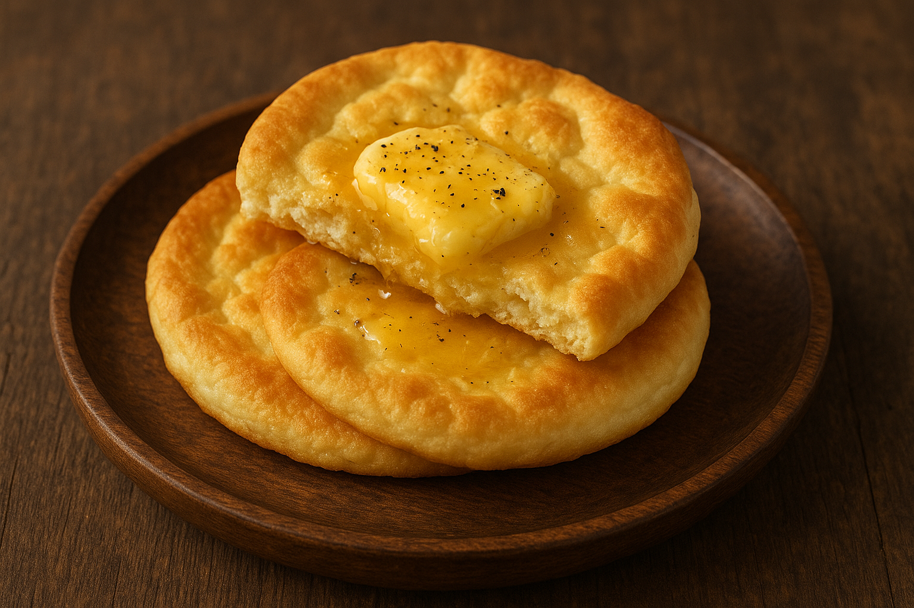

Back Home
Valkyrie Cloudbread with Honeyed Butter
Light, airy bread said to be favored by the choosers of the slain.

Ingredients
-
4 eggs, separated
-
100 g cream cheese
-
1 tbsp honey
-
1 tsp vanilla extract
-
1 pinch salt
-
Optional: sprinkle of cinnamon
Instructions
-
Preheat oven to 150°C (300°F) and line a tray with parchment paper.
-
Beat the egg whites with a pinch of salt until stiff peaks form.
-
In a separate bowl, combine egg yolks, cream cheese, honey, and vanilla.
-
Gently fold the yolk mixture into the beaten whites—keep as much air as possible.
-
Spoon the batter into soft circular clouds on the tray.
-
Bake 20–25 minutes until golden and lightly crisp.
-
Serve warm with honeyed butter—so light it might lift you halfway to Valhalla.